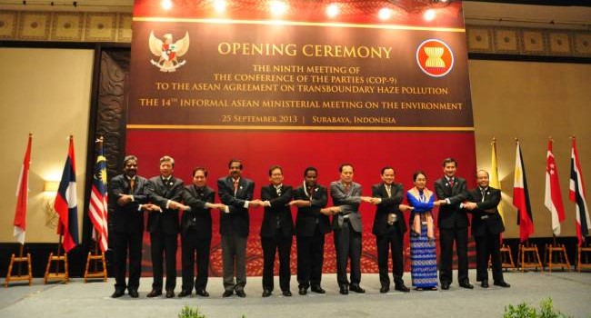
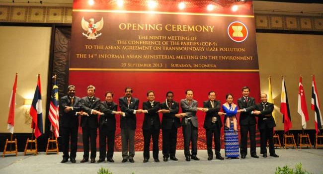

Kerjasama Regional
Kerjasama Regional adalah bentuk kolaborasi antara negara-negara yang berada dalam satu wilayah geografis tertentu untuk mencapai tujuan bersama, seperti pembangunan ekonomi, keamanan, sosial, dan lingkungan. Kerjasama ini sering kali difasilitasi melalui organisasi regional seperti ASEAN (Association of Southeast Asian Nations), Uni Eropa (EU), atau MERCOSUR di Amerika Selatan. Melalui kerjasama regional, negara-negara dapat saling mendukung dalam menghadapi tantangan bersama, memperkuat hubungan diplomatik, serta meningkatkan kesejahteraan masyarakat di wilayah tersebut.
Salah satu contoh nyata adalah kerja sama ASEAN dalam menghadapi perubahan iklim dan menjaga keberlanjutan lingkungan melalui ASEAN Agreement on Transboundary Haze Pollution (AATHP). Kerja sama ini melibatkan seluruh negara ASEAN untuk mencegah dan mengendalikan kabut asap lintas batas yang sering terjadi akibat kebakaran hutan dan lahan. Melalui mekanisme ini, negara-negara anggota saling bertukar informasi, memperkuat sistem peringatan dini, melakukan patroli bersama, serta membangun kapasitas penanggulangan bencana. Kerja sama ini mendukung pencapaian SDGs seperti SDGs 13 (Aksi Iklim), SDGs 15 (Ekosistem Daratan), dan SDGs 3 (Kesehatan). Selain itu, ASEAN juga bekerja sama dalam bidang energi berkelanjutan, pengelolaan sampah plastik di laut, serta pembangunan kota berkelanjutan, yang semuanya menunjukkan bahwa kolaborasi regional sangat penting dalam memperkuat implementasi SDGs di negara-negara Asia Tenggara.